目次 > ゲームについて > 日本Falcom 攻略 > ZWEI II > G-コロッセオ > ペンギン杯
らんの眼
ZWEI II (ツヴァイ 2、ZWEI II Plus)
| 概要 | 情報 | 攻略チャート |
| フード交換 | ペットについて | ボス戦 |
| 敵キャラ一覧 | ハンターランク | G-コロッセオ |
| アイテム一覧 | ガジェット一覧 | トレジャー一覧 |
| ダンジョン一覧 | クリアデータ特典 | Plusの追加要素 |
| ZWEI II攻略へ | 目次へ戻る |
| 呼び込みペンギン 前半 |
| まだアルウェンでしか倒したことがないので、アルウェンでの攻略のみを書きます。 はじめに、呼び込みペンギン(以降 ペンギン)の攻撃はどれもダメージが大きいので、できるだけ多くのフードを用意してください。 序盤は、ペンギンの周囲を回りながら「極光の魔法」で攻撃します。 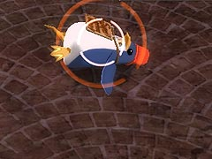 ただし、注意して欲しいのが「おなかがすいて動けないのです」と言って、ペンギンが横になった状態の時に攻撃すると、ダメージは与えられますが魔法を反射してきます。そのため、ペンギンが横になっている時は、反射してくる魔法の動きに注意してください。「極光の魔法」ならば、直線にしか飛ばないので、比較的被害は防げます。 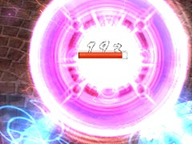 また、ペンギンが横になった状態のエフェクトが派手なため、ペンギンが立ち上がった後、見失うことがあります。気づいたら横にいて、突然の不意打ちを食った・・・なんてことの無いように注意してください。 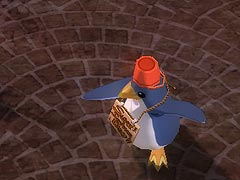 ペンギンの前半の攻撃として、もう一つパンチがあります。これは、主人公との距離がかなり近いときにしか使ってきません。そのため、ペンギンを見失ったときの不意打ち以外では特に注意する必要はないです。 |
| 呼び込みペンギン 中盤 |
| 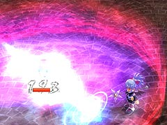 上の画像のようなオーラが出て、「いつも以上のできなのです」とペンギンが言ったら、中盤に入ります。 中盤は、魔法反射がないため「焦熱の魔法」を使います。 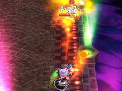 ペンギンが見えるか見えないかの距離を保ちつつ、ステージのハシをぐるぐる周りながら攻撃すれば、ノーダメージで中盤を終わらせることができます。 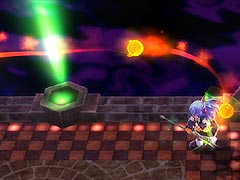 ペンギンも主人公と一定の距離を取りつつ、追いかけてきます。画面上からペンギンの位置が確認できない場合は、「焦熱の魔法」の動きを見て、だいたいの位置を把握してください。 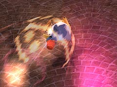 中盤のペンギンの攻撃として、「トリャー!」と言いながらの突進があります。これは、ペンギンと密接していなければジャンプで回避できまし、主人公との距離が離れていると使ってきません。 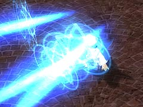 もう一つ、アルウェンの「極光の魔法」と同じような攻撃があります。これは、主人公とペンギンの距離が近いときにしか使ってきません。 そのため、アルウェンで「焦熱の魔法」を使い、ぐるぐる回っていれば、この攻撃を食らう可能性は少ないです。この攻撃を食らう可能性としては、中盤突入直後だけでしょう。 |
| 呼び込みペンギン 後半 |
| 「そろそろ本気を出すのです」とペンギンが言ったら、後半です。はっきり言って、前半・中盤はお遊びだと思った方がいいくらい、ペンギンの攻撃が厳しくなります。 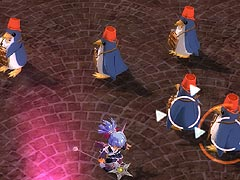 後半に入ると、ペンギンが分身を作ってきます。分身のペンギンもちゃんと攻撃をしてくるので、ペンギン本体の攻撃に注意しつつ、まずは分身を倒すことに集中した方がいいです。 ただし、分身を攻撃するときは、対象以外のペンギンに誤って攻撃してしまうのを防ぐために「無垢の魔法」を使うといいです。 なぜ「無垢の魔法」で分身を倒すのかと言えば、後半に「おなかがすいて動けないのです」と言って横になったペンギンを攻撃してしまうのを防ぐためです。万が一、この状態のペンギンに攻撃が当たってうと、問答無用で「ペンギンファイナルアタック」を食らい、ものすごいダメージを受けます。 ちなみに、「おなかがすいて・・・」を使うのは本体だけで、分身のペンギンは前半の攻撃しか使ってこないようです。 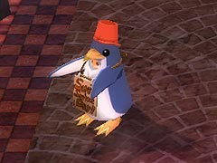 また、手をパタパタしている状態の分身はダメージを与えられないので、パタパタをやめるまで待つか、問答無用でひたすら魔法を連発するかしてどちらかを選んでください。 分身を全て倒したら、いよいよペンギン本体への攻撃を開始します。 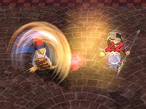 後半のペンギンの攻撃として、射程の広いパンチがあります。前半と違い、3 発ほど連続で使ってくるので、ステージのハシに追いつめられた状態だと何発も食らうので注意が必要です。 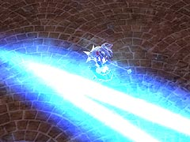 次に中盤で使ってきた「極光の魔法」のような攻撃があります。中盤のものと比べ、放つ光線の数が増えているので注意が必要です。 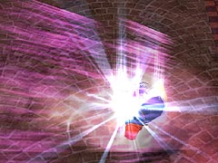 さらに、「遅いのです」と言った後のオーラを纏っての突進です。これは、ある程度まで引き寄せてから狭い円を描くようにぐるぐる回ってよけるようにしてください。ジャンプすると、ほぼ間違いなく追いつかれてダメージを食らいます。 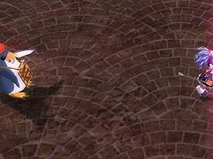 そして、「これで終わりなのです」と言った後、手を広げて主人公の側に近寄ってくる攻撃があります。これは、ある程度まで引き寄せてからジャンプでよけてください。もしよけられないと、「ペンギンファイナルアタック」を食らいます。 ペンギンの後半では、「これで終わりなのです」を使った生まれる隙を突き、「極光の魔法」で攻撃してください。 ただし、魔法は全て反射されますし、前半の反射と違って「極光の魔法」の反射ですら追尾能力が上がっているので、多くて2 発にとどめておきましょう。 なぜ2 発かといえば、上の理由以外にも「これで終わりなのです」の後に「おなかがすいて動けないのです」を使われた場合、3 発以上だと間違いなく「ペンギンファイナルアタック」を食らうためです。 後半のペンギンにできるだけ「これで終わりなのです」を使ってもらうため、常にペンギンから離れた位置にいるといいです。極端な話、常にペンギンが画面外にいるような状態でも構いません。 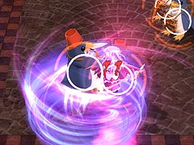 最後に、もし「ペンギンファイナルアタック」を食らっても、食らっている最中にフードをモリモリ食べて回復し、次につなげましょう。 |
| 概要 | 情報 | 攻略チャート |
| フード交換 | ペットについて | ボス戦 |
| 敵キャラ一覧 | ハンターランク | G-コロッセオ |
| アイテム一覧 | ガジェット一覧 | トレジャー一覧 |
| ダンジョン一覧 | クリアデータ特典 | Plusの追加要素 |
| ページの上部へ | ZWEI II 攻略へ | 目次へ戻る |